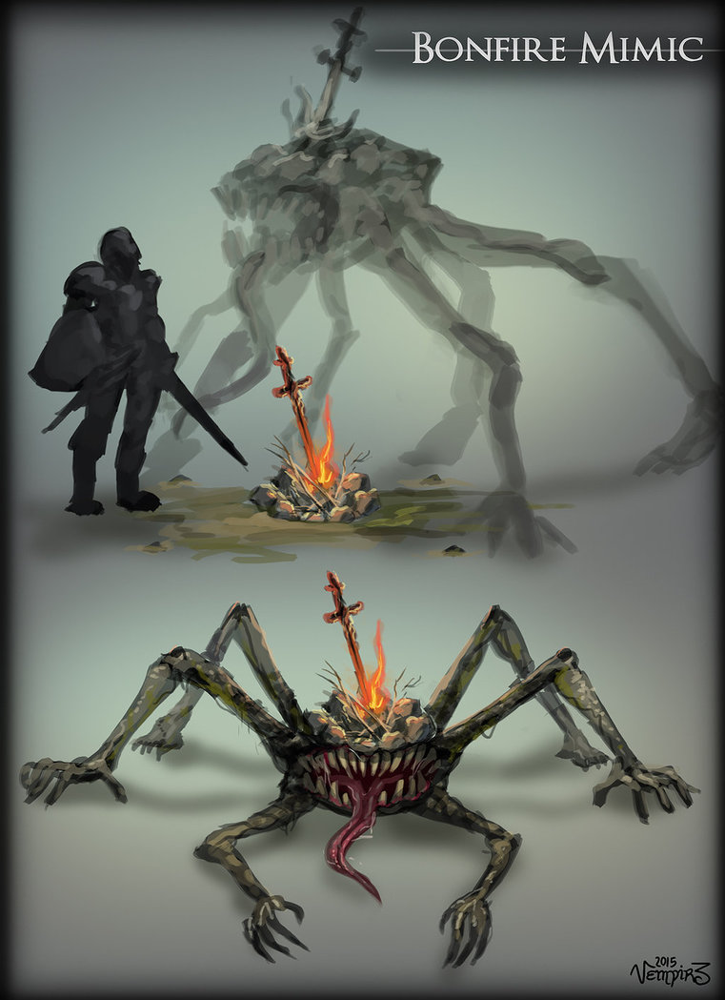

Happy NG+ everyone.
The real 2020 starts here...

https://twitter.com/wetgenes/status/1344303332651888642 @crowbarska The whole backdrop that you then explorer with hidden secrets is probably why I link it to captain toad...
Oh also if you are not too good at arcade games you can do a crossword instead.
https://twitter.com/wetgenes/status/1344302866387922945 @crowbarska You either do something obvious that gets you to the next level or something strange that jumps you to another level.
So you can choose between secrets and exploration or just grinding through the arcade experience to get to the end.
https://twitter.com/crowbarska/status/1343924227129421826 @crowbarska It may not be what I remember so I'll try a description from memory. :)
You have an arcade game played over an interesting backdrop.
Upon completion you drop into the backdrop as a platform adventure sort of game.
So you have inventory and interaction with items on screen.
https://twitter.com/crowbarska/status/1343909735515488256 @crowbarska It has been many a year and I do not know how it stands up to the passage of time, but, have you ever played wizkid?
Full of secrets but they are all sort of perpendicular to the game.
Hands up if you have ever padded a technical design document with an ASCII table or two so it delivers that reassuring weight to people who will never read it but at least managed to copy paste correctly. https://twitter.com/MarkusGerstel/status/1343249726456606720
@MxJLloyd Just as stubborn translates to donkey so too does lock-in translate to prison.
Without #CheersGerryAnderson and the early 70s TV series UFO, then all your XCOMs, with or without the - would cease to exist. https://twitter.com/ImJamieAnderson/status/1342730196475109376
https://twitter.com/andrewcrawshaw/status/1341403119067025411 @andrewcrawshaw @audibleuk Sometimes there is a whole week inbetween sales.
https://twitter.com/KenMcFarlane/status/1340329062879916038 @KenMcFarlane justwatch is useful for that sort of thing
https://www.justwatch.com/uk/search?q=invader%20zim
that would be a no to UK, the US has it, of course, damn merkins
SHEWING ITS Uses and Advantages OVER ALL OTHERS; Both in Point of Expence, and every Purpose of a ChamberFire
The State of the Weather in this Island is so extremely variable and uncertain, that the Inhabitants are obliged to keep Fires to sit by near Eight Months in the Year. https://twitter.com/gutenberg_new/status/1340074409227251712
What time of day will Stadia go down on Xmas day?
Kinda enjoying the tweetees where people think that console certification consists of deep game design and narrative critique rather than corporate complaining about the names and images you used to represent their heavily trademarked controller buttons.
Pretty much this, also here is a fun joke that explains how bugs get fixed under extreme pressure.
Patient: Doctor doctor it hurts when I do this!
Doctor: Well don't do that then. https://twitter.com/rezibot/status/1338642315099865088
Since we are doing this again...
Fun fact.
Crunch isn't a problem.
Unpaid overtime is a problem.
As soon as overtime costs then a very very strange thing happens.
Crunch immediately switches from mandatory, into unacceptable, except in extreme situations.
rollseyes*
https://twitter.com/CelDavison/status/1337798790703685634 @CelDavison I recently noticed that you can buy hearing aids from places like banggood, of course you can, although I don't need one I now feel like I want one.
Specifically the ones that let you cosplay as Gordon Cole which I had assumed where extinct technology.
https://twitter.com/Robwilliams71/status/1337014476080615424 @Robwilliams71 @dabnorfish @2000AD @westonfront @lilmachine Death by snu-snu.
Followed by lots of little baby Joe mutants.
https://twitter.com/animtree/status/1336680659981627394 @animtree I had to read the headline a few times before I realized this was aimed at players rather than developers.
Also the solution (to both types of burnout) is obviously bigger and better games, everyone knows that.